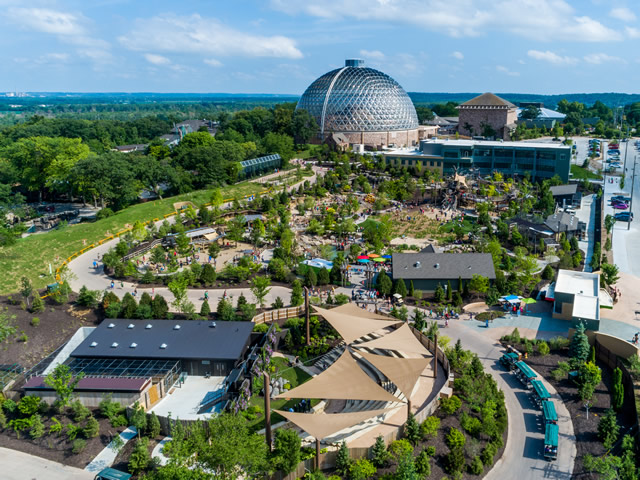

Charles Schwab Field - one of Omaha's most popular attractions is the College World Series at Charles Schwab field. More information here

Henry Doorly Zoo - a great place for family and friends to visit. Recently was named the third best zoo in the country. More information here
Bob Kerrey Pedestrian Bridge - a fun way to cross between Omaha, NE and Council Bluffs, IA. It is a 3000 foot bridge that crosses the Missouri River. More information here